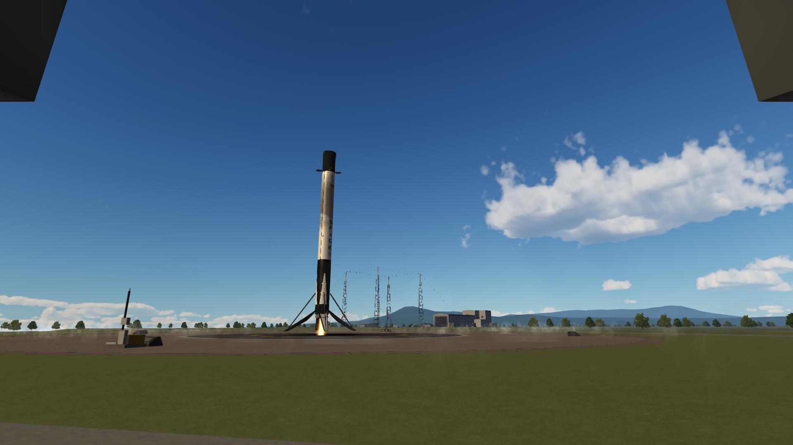
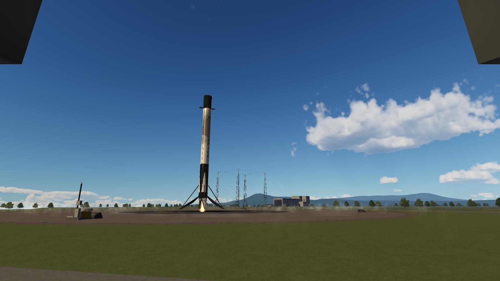

MoonRadar-1
Vehículo: Falcon 9 Block 5
Fecha: 19 de febrero de 2025
Estado: Éxito
Introducción
Halcon Space lanzó con éxito el alunizador MunStrider-1 hacia la superficie de Muna. La primera etapa B1069 logro realizár un aterrizaje controlado sobre LZ-1.
Detalles Técnicos
- Vehículo: Falcon 9 Block 5
- Altura del cohete: 70 m
- Propulsor: B1069.1
- Carga útil: Alunizador radar
- Órbita: Muna
- Recuperación: Éxito sobre LZ-1 "Landing Zone 1".
Imágenes de la misión


 
